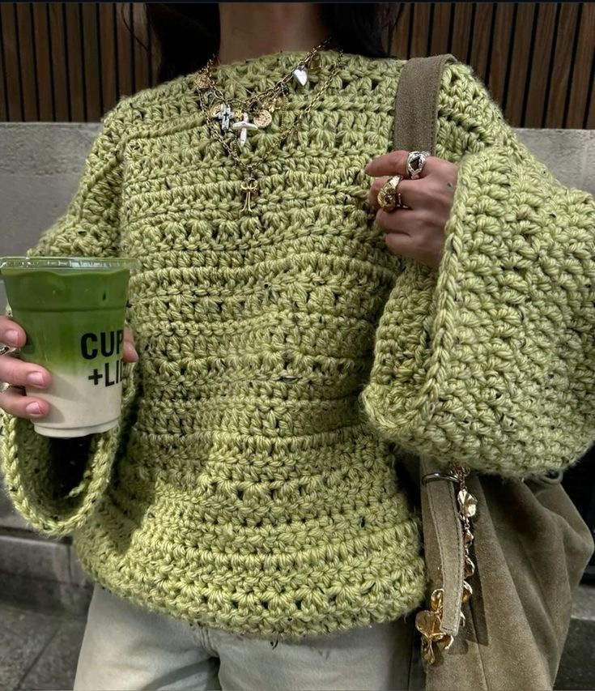
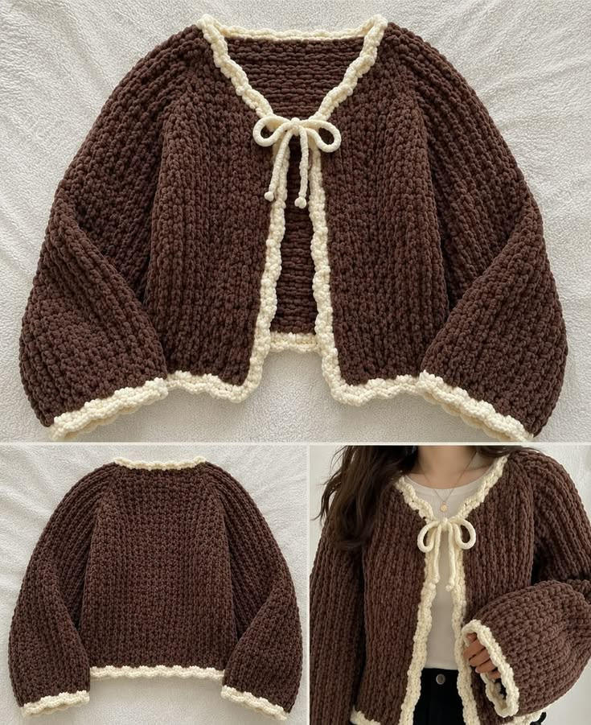
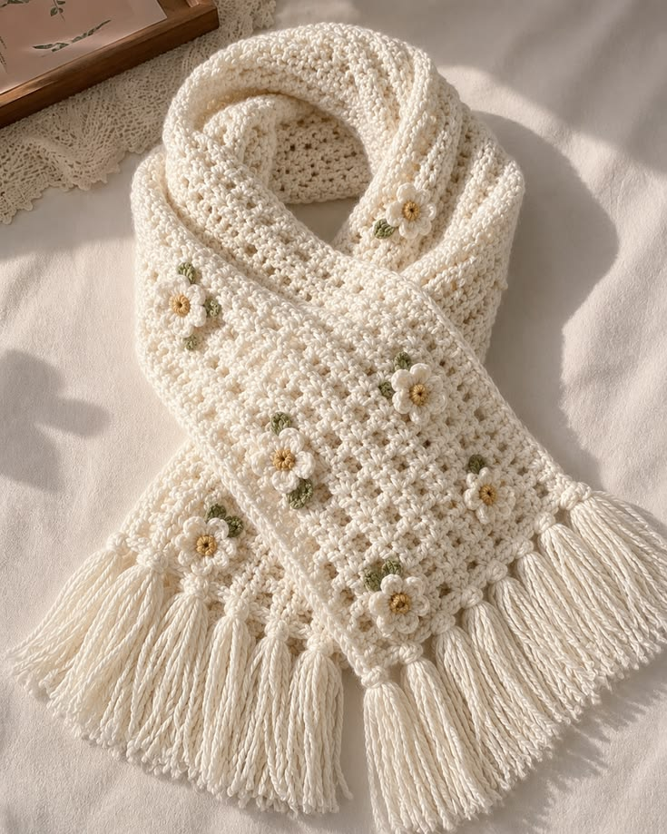
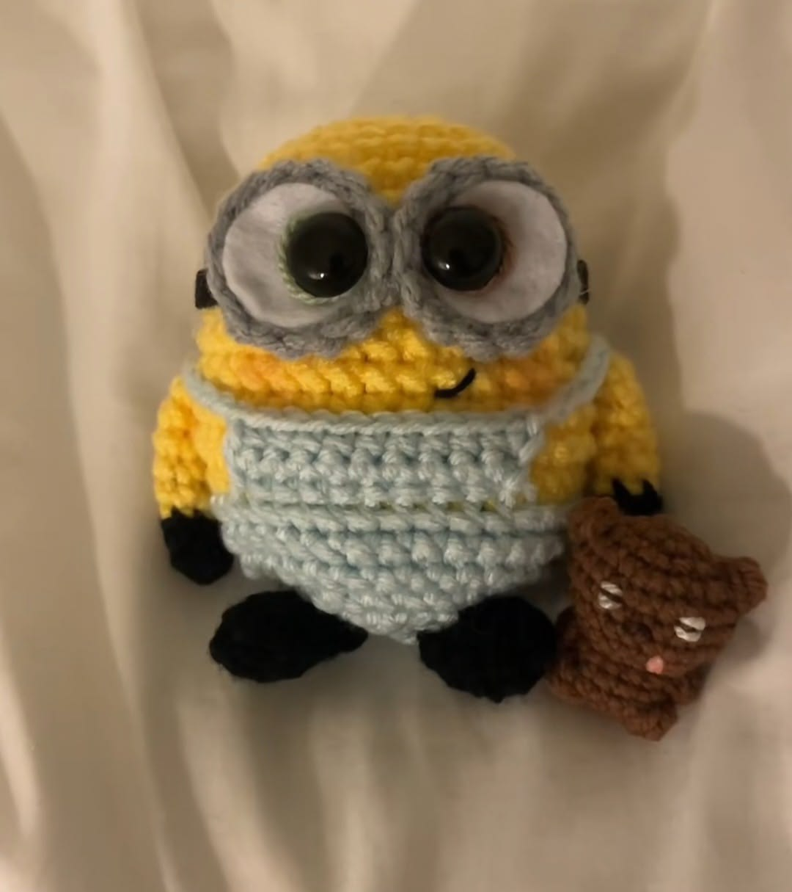

В'язання-це просто!
Покрокові схеми, прості уроки та натхнення для кожного вибору

Стильний оверсайз-светр із фактурної пряжі з широкими рукавами. Ідеальний вибір для затишних осінніх образів.

Ніжний та трендовий кардиган із м'якої плюшевої пряжі з контрастною білою облямівкою та милим бантиком.

М'який білосніжний шарф, прикрашений делікатними квітковими мотивами та довгою бахромою.

Милий та кумедний персонаж, зв'язаний гачком із комбінезоном і крихітним ведмедиком.